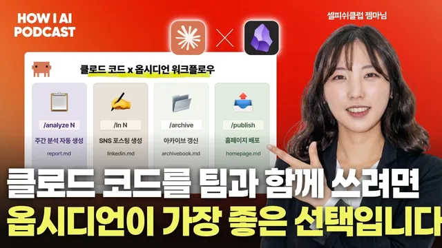

클로드 코드는 옵시디언으로 비로소 완성됩니다. 진짜 자동화 협업 사례를 보여드리겠습니다. (셀피쉬클럽 젬마님)

원본 영상 보기 →
- 팀이 쌓는 진짜 자산은 워크플로우예요
- 매주 하던 일이 그대로 콘텐츠가 되는 구조
- 스킬은 늘리는 것보다 묶는 게 중요해요
한 줄 요약
빌더 조쉬가 셀피쉬클럽의 젬마님을 만나, 여덟 명의 팀이 옵시디언(Obsidian)과 클로드 코드(Claude Code), 깃허브(GitHub)를 엮어 매주 하던 일만 하면 기록이 쌓이고 분석되고 웹사이트에 공개되는 구조를 어떻게 만들었는지 들어 봤어요. 도구 이야기처럼 보이지만 AI를 왜 혼자가 아니라 팀으로 써야 하는지에 대한 이야기이기도 해요.
전체 내용 정리
회사보다 팀이 크다는 생각에서 셀피쉬클럽과 AA팀이 나왔어요
젬마님은 AI를 마케팅과 비즈니스에 어떻게 붙일지를 자기 팀은 물론 여러 기업과 함께 고민하는 일을 해요. 셀피쉬클럽은 그렇게 실험하는 프로젝트를 일단 실행해 보고 실수와 실패, 작은 성공을 나누는 AI 커뮤니티예요. 다만 젬마님 설명으로는 커뮤니티라기보다 크루이자 팀 조직에 더 가까워요. 그 활동을 응원하고 참여하는 사람들까지 합쳐서 커뮤니티라고 부른다고 해요.
시작은 젬마님의 경력에서 나왔어요. 스타트업에서 11년 정도 마케팅 일을 하며 여러 회사를 거쳤는데, 그때마다 "회사보다 팀이 훨씬 크다"는 생각을 했대요. "회사는 바뀌어도 저희 팀은 잘 안 바뀌는 거예요." 같이 해 보자며 함께 이직하기도 했고 회사가 오히려 프로젝트이고 함께하는 사람들이 더 큰 개념이 아닐까 싶었다는 거죠.
그러던 2023년 1월 말 챗GPT(ChatGPT)가 한국에 들어왔어요. 써 보니 AI를 마케팅에만 적용해도 할 일이 굉장히 많겠다는 감이 왔고 팀 단위로 일을 벌여 보자는 생각과 자연스럽게 겹쳤다고 해요. 처음에는 다섯 명이 '이기적 공유'라는 개념을 걸고 각자 겪은 것을 나누는 데서 출발했어요. 조쉬는 회사 밖에서 사람들이 생산적으로 모여 프로젝트를 하고 수익 활동까지 한다는 점이 놀랍다고 말해요.
셀피쉬클럽은 작년에 AI 영상 팀을 많이 발굴하고 키웠고 실제로 수익을 내는 팀도 만들었어요. 그런데 클로드 코드가 나오면서 에이전트가 기획부터 끝단 실행까지 다 할 수 있게 되자 젬마님은 새로운 페이지가 열렸다고 느꼈대요. 본인도 비개발자 출신이라 정보가 쏟아질 때 포모(FOMO, 나만 뒤처질까 봐 드는 불안)가 왔고 옆을 보니 팀원들도 같은 상태였어요.
그래서 셀피쉬클럽 안에 AI 에이전트를 다루는 AA팀을 만들고 예전 방식을 그대로 가져왔어요. 주마다 미션을 수행하고 그 결과를 서로 공유하는 방식이죠. 올해 셀피쉬클럽은 AI 크리에이터 팀과 AA팀, 두 팀에 집중하고 있어요. AA팀은 젬마님을 포함해 여덟 명이고 대부분 비개발자에 클로드 코드도 거의 처음 써 보는 사람들이에요.
하는 일은 사람마다 달라요. 한 파트는 셀피쉬클럽 자체가 어디까지 에이전틱해질 수 있는지 시험해요. 원래 사이트는 웹플로우(Webflow)로 만들었고 고객 소통은 카카오 채널로 했는데, 사이트를 중심으로 CRM까지 에이전트를 붙여 보는 작업이에요. 다른 파트는 개인 프로젝트예요. 13년 정도 핀테크 업계에 있다가 독립한 크루는 한 달에 하나씩 창업하는 실험을 하며 패션 커머스 쪽 서비스를 만들고 있어요. 노션 기반으로 회사 운영 시스템을 짜 주던 크루는 영역을 넓히고 싶어서 이번 옵시디언 구조를 맡았고요.
AI를 혼자 공부하지 말라는 이유는 워크플로우에 있어요
젬마님이 자주 하는 말이 있어요. AI를 혼자 공부하지 말고 팀 단위로 하라는 거예요. 조쉬가 그 이유를 묻자 젬마님은 AI를 하면서 가장 값지다고 보는 게 결과물이 아니라 하나의 결과가 나오기까지의 워크플로우라고 답해요. 그런데 혼자 하면 그 워크플로우가 나올 수 있는 유즈 케이스(사용 사례) 자체가 제한될 수밖에 없다고 해요.
이유는 두 가지예요. 한 사람이 쓸 수 있는 시간에 한계가 있고 개인의 지식과 경험은 한쪽으로 치우쳐 있으니까요. 그래서 젬마님은 "AI는 진짜 무조건 같이 할 수밖에 없는 거 같아요"라고 말해요. 기술은 이미 다 나와 있는데 그걸 어떻게 조립해서 요리할지는 사람마다 너무 다르거든요. 그 조립법을 제대로 볼 수 있는 곳도 많지 않다고 봐요.
젬마님이 자주 드는 예시는 비빔밥이에요. 비빔밥이 나왔다는 사실보다 재료를 어떻게 구했고 어떤 조리가 필요했는지가 중요하다는 거죠. 실제로 해 보면 부딪히는 지점이 많은데, 남에게 묻기엔 속된 말로 좀 짜친다 싶은 순간도 많아요. 그런 부분 때문에 같이 할 수밖에 없다고 해요.
조쉬도 공감해요. 혼자 에이전트 군단을 만들어 개인 생산성이 엄청나게 올랐다는 이야기가 많지만 조쉬는 팀에 에이전트나 지식 관리 시스템을 따로 붙여 팀 단위로 AI를 쓸 때의 생산성이 훨씬 남다르다고 느낀대요. 실행은 AI가 다 해 주니 사람은 판단을 해야 하고 사람끼리 만나 더 나은 의사 결정을 하며 비즈니스를 키우는 쪽이 더 매력 있다는 거예요. 조쉬는 이게 많은 사람이 말하는 AX(AI 전환)의 본질이 아닐까 생각한다고 해요.
옵시디언 볼트 하나로 미션과 회의록, 분석이 돌아가요
옵시디언을 고른 계기는 거창하지 않았어요. 젬마님은 링크드인(LinkedIn)에서 노션이 AI를 하는 데 걸림돌이 될 수 있다는 글을 우연히 보고 공감했대요. 마침 클로드 코드로 로컬 파일을 소스 삼아 여러 가지를 만들어 보던 때라, 팀의 이기적 공유물과 회의록이 소스가 되면 어떨까 싶었다고 해요. 젬마님 말로는 "100% 옵시디언이 좋아서는 전혀 아니었고" 프로젝트 하나에 한번 도입해 볼 만하다는 생각이었어요.
화면으로 보여 준 볼트 구조는 이래요. 미션 폴더에는 주차별 미션 제출 문서가 쌓이는데 전부 마크다운이에요. 처음에는 익숙하지 않아서 노션에 먼저 쓰고 노션 MCP로 긁어 왔지만 지금은 멤버들이 직접 올려요. 옵시디언의 실시간 동기화 서비스는 유료라서 무료로 쓰는 이 팀은 각자 문서를 올린 뒤 깃에 푸시해요. 올해 초 깃허브 워크숍을 한 번 했고 비개발자가 클로드 코드를 팀 단위로 쓰는 법을 다룬 워크숍도 대중을 상대로 몇 번 열었던 덕에 팀원들이 익숙해졌다고 해요.
위클리 회의록이 모이는 미팅스 폴더는 예외예요. 위클리는 실시간 동기화가 필요해서 지금도 노션에서 MCP로 가져와요. 스킬 폴더는 슬랙(Slack) 봇을 개발해 동기화해 두고 멤버들이 괜찮다고 느낀 스킬이나 플러그인을 자유롭게 넣어요. 그 밖에 곧 열릴 공유회 기획 자료와 AA팀 아키텍처 문서가 있어요. 쉐어링 폴더에는 각자 수행한 미션을 소스로 클로드 코드와 함께 써 둔 공유 초안이 들어가요. 젬마님은 이번 인터뷰 사전 질문에 대한 답변도 여기서 클로드와 써 봤다고 해요.
흥미로운 건 애널리시스 폴더예요. 마크다운 문서가 쌓이면 클로드 코드가 참여자별로 어떻게 참여하고 있는지, 관심 키워드가 뭔지, 매주 무슨 일을 했는지 요약해 줘요. 사람 단위 분석과 별개로 주 단위 분석도 해서 그 주에 어떤 결과가 있었는지 정리하고요. 조쉬는 이를 이렇게 정리해요. 사람이 쓰는 미션과 미팅스 폴더가 앞단에 쌓이고 클로드 코드가 일정 주기로 돌면서 그걸 한꺼번에 요약해 애널리시스 폴더에 적재하는 구조라는 거예요.
조쉬는 자기 팀 이야기도 꺼내요. 조쉬 팀도 회의록을 오픈클로(OpenClaw)를 통해 마크다운으로 로컬 폴더에 저장하지만 팀원이 다 맥미니에 접속하지 않는 한 볼 수가 없어서 실제로 들춰 보지 않았대요. 그래서 깃허브와 로컬 사이의 중간 다리가 좋아 보였고 마크다운이라 AI가 잘 읽고 요약을 잘 뽑아낸다는 점도 눈에 들어왔다고 해요. 3년 넘게 팀을 운영하며 회의록이 아카이빙 이상의 역할을 하길 바랐다는 조쉬의 말에 젬마님도 크게 공감해요. 회의록을 남기고 녹화까지 해도 쓸모 있게 만드는 게 힘든데, 공유회 기획 하나만 해도 예전엔 일일이 긁어다 넣어야 했다는 거죠.
공개할 것만 웹사이트로 내보내고 매주 월요일 자동 배포해요
이 볼트는 웹사이트와도 연결돼 있어요. 모든 문서가 공개되지는 않아요. 팀 내부 회의록은 안에만 두고 주간 미션과 스킬 인사이트 같은 것만 사이트에 올라가요. 굳이 외부에 공개하는 이유를 묻자 젬마님은 이기적 공유라는 팀 철학을 들어요. 내가 이런 걸 했다고 드러내는 게 중요한데, 이런 구조가 없으면 따로 게재 작업을 해야 하니 그냥 다 동기화해 버리자는 데서 시작했대요. 이 팀을 일시적으로 운영할 생각이 아니어서 팀이 돌아가는 OS에도 관심이 많았다고 해요.
조쉬는 이 대목에서 놀랐다고 해요. 조쉬 팀도 매주 하는 일이나 회의록을 마크다운으로 쌓고는 있었지만 그걸 외부에 공개하거나 다른 이해관계자가 볼 수 있게 가공하는 과정까지 자동화한다는 건 상상해 본 적이 없었대요. 이렇게 하면 콘텐츠가 복리로 계속 쌓일 수밖에 없겠다는 게 조쉬의 첫인상이었어요.
기술적으로는 레포지토리를 두 개 운영해요. 하나는 멤버들이 작성한 옵시디언 원본이 담긴 레포예요. 퍼블리시라는 스킬이 여기서 공개 폴더만 골라 사이트와 연결된 저장소(AA 어드민)로 동기화하고 그 저장소에 들어온 내용은 버셀(Vercel)로 자동 배포돼요. 퍼블리시는 원래 수동으로 돌렸는데 지금은 월요일 오전마다 크론으로 자동 실행돼요. 팀 회의가 일요일마다 있기 때문이에요. 멤버들이 옵시디언에 쓰고 주간 일을 하고 그걸 분석해 퍼블리시하는 루틴이죠.
링크드인 글도 이 흐름에 들어 있어요. 과제 중 하나가 링크드인 글 쓰기예요. 미션으로만 끝내기 아쉬워서 각자 한 일을 SNS에 드러내자는 취지인데, 그래야 자산이 되기 때문이에요. 그런데 그냥 쓰라고 하면 쉽지 않으니 본인이 쓴 글을 베이스로 스킬을 만들어 뒀어요. 미션만 수행하면 링크드인 글이 만들어지는 구조예요.
조쉬가 정리한 역할 분담은 이래요. 깃허브는 옵시디언 문서를 동기화하는 클라우드, 옵시디언은 내용을 계속 축적하는 팀 내부 도구, 클로드 코드는 퍼블리시 같은 스킬로 웹에 드러내는 도구라는 거예요. 젬마님은 거의 정확하다면서 클로드 코드의 역할을 하나 더 짚어요. 지금 구조는 완성형이 아니고 계속 고치는 중이라 사이트 구조나 팀 자산을 활용할 새 스킬을 클로드 코드와 상의하고 개발까지 맡긴대요. 젬마님 표현으로는 팀 전체의 두뇌 역할이에요.
조쉬는 이걸 인간의 시스템과 AI의 시스템이 만나는 장면으로 봐요. 사람은 정해진 주기에 모여 미팅하고 스터디하며 산출물을 만들 수밖에 없어요. 그 산출물이 기록으로만 남지 않고 링크드인으로도 나가고 스킬을 거쳐 홈페이지로도 나가도록 짜임새 있게 엮였다는 거예요.
조쉬가 AI가 대신하는 일을 좀 더 설명해 달라고 하자 젬마님은 뜻밖의 이야기부터 꺼내요. "스킬이 많아도 안 쓰게 되더라고요." 그래서 스킬을 많이 통합했어요. 퍼블리시는 원래 복사와 빌드, 버셀 자동 배포가 끊어져 있던 워크플로우였는데 하나로 묶었어요. 주간 분석 자동 생성도 과제와 회의록을 통째로 읽어 한 번에 처리하도록 합쳤고요.
여럿이 같이 쓰다 보니 생긴 문제도 있어요. 멤버들 말고 젬마님과 전체 구조를 짜는 PM이 폴더 구조를 크게 건드리면 깃에 다시 올릴 때 충돌이 나기도 하고 그 사람이 왜 그렇게 바꿨는지 히스토리를 알아야 할 때도 생겨요. 그래서 볼트(옵시디언 폴더)에서 무슨 일이 일어나는지 남기는 기록 체계를 스킬과 묶어 계속 개선하고 있어요. 폴더가 크게 바뀔 때 스냅샷을 찍어 두는 식이에요. 조쉬는 이 볼트 로그를 구조가 지금 어떻게 진행되는지 현황을 파악하는 용도로 이해했고 젬마님도 딱 그렇게 보면 된다고 답해요.
옵시디언을 고른 명분은 마크다운과 빠른 결과물이었어요
조쉬는 두 가지를 물어요. 왜 하필 옵시디언이어야 하는지, 그리고 데이터가 많아지면 어떻게 관리할지예요. 젬마님은 정답은 잘 모르겠다고 먼저 말해요. 다만 옵시디언을 굉장히 하드하게 쓰는 사람들을 봤대요. 문서를 망처럼 연결하고 에이전트가 훅으로 돌면서 지식을 계속 채워서 LLM 위키라는 이야기까지 나올 정도로요. 그 레퍼런스를 보고 나니 무거워지는 건 전혀 걱정되지 않았다고 해요.
오히려 젬마님은 옵시디언을 쓸 명분이 부족했던 사람이었대요. 좋다는 말은 많이 들었지만 학자처럼 공부하는 스타일이 아니라 어디에 써먹을지 몰랐던 거죠. 빠르게 결과물을 만드는 데 연결된다면 써 보고 싶었고 이번이 그 자리였어요. 깊이 비교 분석해서 결정한 것도 아니에요. 젬마님은 요즘 "AI 시대에 모든 걸 절댓값으로 비교 분석하는게 가능한가"라는 생각을 한다고 해요.
옵시디언이 마크다운 문서를 기반으로 작동한다는 정도의 근거면 시도해 볼 만하다고 봤고 그 과정에서 클로드와 상의를 많이 했대요. 가장 걱정한 건 동기화였어요. 노션을 대체할 도구로 생각했기 때문이에요. 그래서 실시간이 필요한 위클리만 노션에 남기고 나머지는 깃 푸시로 돌리는 지금의 절충 구조가 나왔어요.
다음 목표는 워크플로우를 공개하는 커뮤니티예요
앞으로의 그림을 묻자 젬마님은 2년 반 정도 크루 조직을 내부에서 운영하며 많이 받은 질문을 꺼내요. 크루가 되려면 어떻게 하느냐는 질문이었는데, 공개 채용도 애매해서 챌린지 같은 프로그램을 계속 열어 왔대요. 그러면서 비개발자, 특히 마케터가 같이 이야기하고 함께 커 갈 커뮤니티가 필요하다고 느꼈다고 해요. 사람들이 지금 불안하니 어딘가에 소속되고 싶어 할 거라는 판단이에요. 팀 안에서 한번 굴려 봤으니 이제 외부 사람도 들어와 미션을 수행하고 자기 결과물을 게재하는 구조로 넓히려 하고 지금은 그 스노우볼을 굴려 보는 초반 단계라고 해요. 조쉬는 크루뿐 아니라 외부에서 새로 오는 사람들의 데이터까지 쌓이면 훨씬 더 많은 소재와 콘텐츠를 만들 수 있는 형태로 나아갈 것 같다고 반응해요.
셀피쉬클럽의 가장 큰 원동력은 워크플로우 공유예요. AA팀 이전의 AI 크리에이터 팀은 작업 과정을 노션에 쌓았는데, 젬마님이 그 예시를 보여 줘요. 한 크루는 캐릭터가 팔을 어색하게 드는 언밸런스 암스라는 밈 같은 동작을 꼭 넣고 싶었대요. AI와 상의하고 손으로 그려 주고 나노바나나(Nano Banana)로도 해 봤지만 안 됐고 미드저니(Midjourney)의 편집 기능에서 방법을 찾았어요. 도구마다 장단이 있고 그걸 어떻게 잇는지가 중요하다는 걸 팀 전체가 배운 셈이에요.
다른 크루는 부분 확대 컷을 만드는 프롬프트를 SNS 이벤트에서 받아 자기 식으로 변형해 썼고 챗GPT 대화 링크까지 첨부해 과정을 남겼어요. 화이트보드로 그린 한 수강생의 워크플로우에는 캐릭터 일관성을 위한 캐릭터 시트뿐 아니라 공간 일관성을 위한 공간 시트까지 있었고 팀은 그걸 보고 도입하기로 했대요. 젬마님이 이런 예시를 보여 준 이유는 이 말에 담겨 있어요.
"에이전트로 이제 다 딸깍하면은 되는 시대기도 해요."
그런데 젬마님은 그렇기 때문에 오히려 나올 수 있는 조합이 굉장히 많아진다고 봐요. 그 조합을 서로 나눌 방법으로 옵시디언 방식 같은 구조를 커뮤니티 차원에서 키우고 싶다고 해요. 개인 비전도 팀이에요. AI를 한 지 3년이 조금 넘었는데 언제까지 이렇게 할 수 있을까 하는 생각이 문득 든대요. 그때 자신이 언제 즐거운지 돌아보니 답이 팀이었고 팀으로 상호 작용하며 즐겁게 AI를 쓰는 방법을 찾는 게 미션이자 사명이라고 해요. 조쉬도 직원이 있는 회사를 운영하며 조직 AX를 이야기하는 입장이라 공감한대요. 예전엔 1인 유니콘에 관심이 많았지만 사람이 밀도 있게 소통하고 행복해지려고 AI를 곁에 두는 연구가 더 의미 있다고 봐요.
끝으로 젬마님은 두 가지를 소개해요. 하나는 AA 스타터 키트예요. 클로드 코드가 팀의 대화를 기반으로 만들어 준 레포지토리로, AI 스터디 실무팀을 위한 운영 시스템 템플릿이에요. 구조를 처음 잡은 크루의 크레딧과 팀이 쓰는 슬래시 명령어도 들어 있어서 URL을 주고 따라 해 보고 싶다고 하면 된다고 해요. 조쉬는 각자 조직에 맞게 포크해서 변형해 보라고 권하고 자신도 미리 써 보고 후기를 공유하겠다고 해요. 주소는 영상 아래에 있어요.
다른 하나는 무료로 여는 이기적 공유회예요. 28일 8시 30분에 열리고 AA팀 여덟 명이 6주 동안 무엇을 만들었는지 한 사람당 15분 정도씩 공유해요. AA팀이 어떻게 굴러갔는지, 옵시디언 시스템을 실제로 어떻게 만들었는지가 다뤄져요. 클로드 코드로 오픈클로처럼 구축한 나를 위한 OS, 실제 고객까지 이어진 고객용 프로덕트, 셀피쉬클럽의 AX와 CRM 알림을 에이전트로 처리한 이야기도 나올 예정이에요. 젬마님은 바이브 코딩 도구로 만들 수 있는 것을 크게 나를 위한 OS와 고객 프로덕트, 두 가지로 본다고 해요. 신청은 영상이 올라가는 날부터 가능할 거라고 해요.
핵심 인사이트
- 팀이 쌓는 진짜 자산은 워크플로우예요: 젬마님은 결과물보다 그 결과가 나오기까지의 과정을 가장 값지게 봐요. 혼자서는 시간과 경험의 한계 때문에 볼 수 있는 유즈 케이스가 좁아지니, 막혔던 지점과 도구 조합까지 남기는 팀이 더 빨리 배워요.
- 매주 하던 일이 그대로 콘텐츠가 되는 구조: 미션과 회의록을 마크다운으로 쓰기만 하면 클로드 코드가 사람별·주별 분석을 만들고 공개 폴더는 월요일 아침 사이트에 배포되고 링크드인 글 초안까지 나와요. 따로 게재 작업을 하지 않아도 기록이 복리로 쌓인다는 게 핵심이에요.
- 스킬은 늘리는 것보다 묶는 게 중요해요: 스킬이 많아지자 오히려 안 쓰게 됐고 끊어져 있던 복사·빌드·배포를 퍼블리시 하나로 합치면서 실제로 돌아가기 시작했어요. 여럿이 같은 볼트를 건드릴 때는 변경 기록과 스냅샷이 필요하다는 점도 눈여겨볼 만해요.
- 도구 선택에 완벽한 비교표가 꼭 필요하지는 않아요: 젬마님은 마크다운 기반이라는 근거 하나로 옵시디언을 시도했고 실시간이 필요한 위클리만 노션에 남기는 식으로 현실적인 절충을 했어요.
오늘 당장 해볼 것
- 영상 아래에 있는 AA 스타터 키트 주소를 클로드 코드에 주고 우리 팀 버전으로 바꿔 달라고 해 보세요. 폴더 구조와 슬래시 명령어가 이미 잡혀 있어서 빈 볼트에서 시작하는 것보다 훨씬 빨리 감이 와요.
- 지난 몇 주 치 회의록이나 업무 기록을 마크다운 파일로 한 폴더에 모은 뒤, 클로드 코드에 사람별·주별 요약을 만들어 달라고 해 보세요. 회의록이 아카이빙 말고 어디까지 쓸모가 생기는지 바로 확인할 수 있어요.
- 지금 쓰는 스킬이나 자동화 목록을 펼쳐 놓고 실제로 안 쓰는 것과 끊어져 있는 단계를 찾아보세요. 복사, 빌드, 배포처럼 매번 이어서 돌리는 단계라면 하나의 스킬로 묶을 수 있어요.